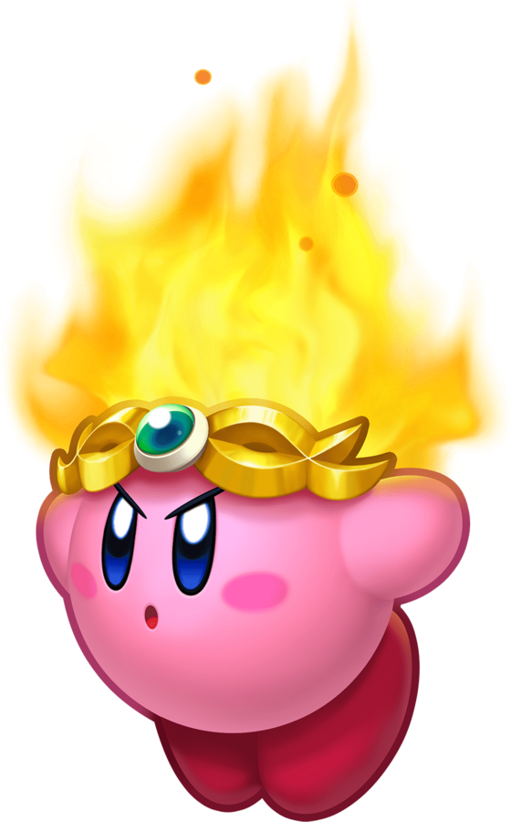
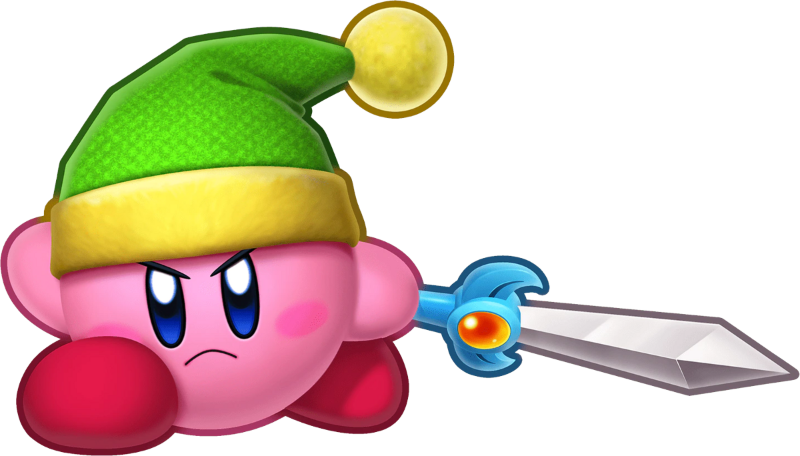
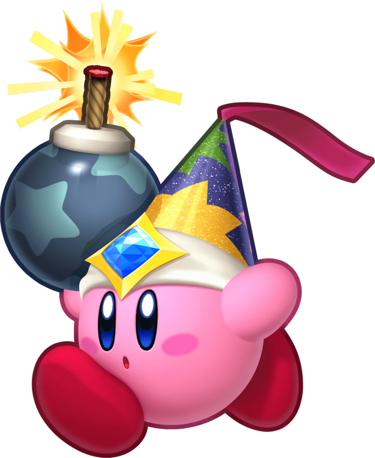
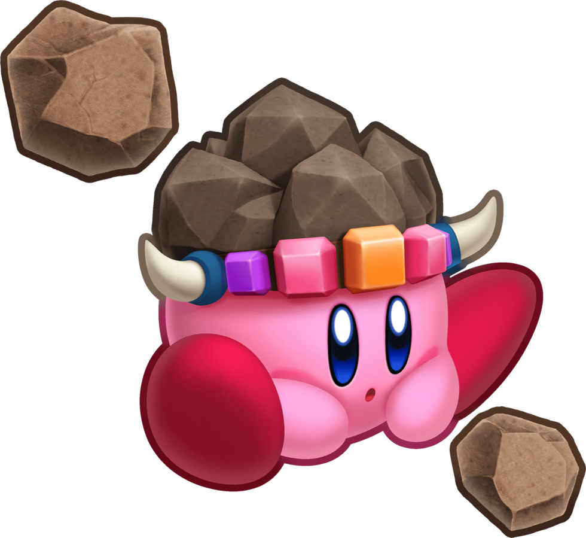
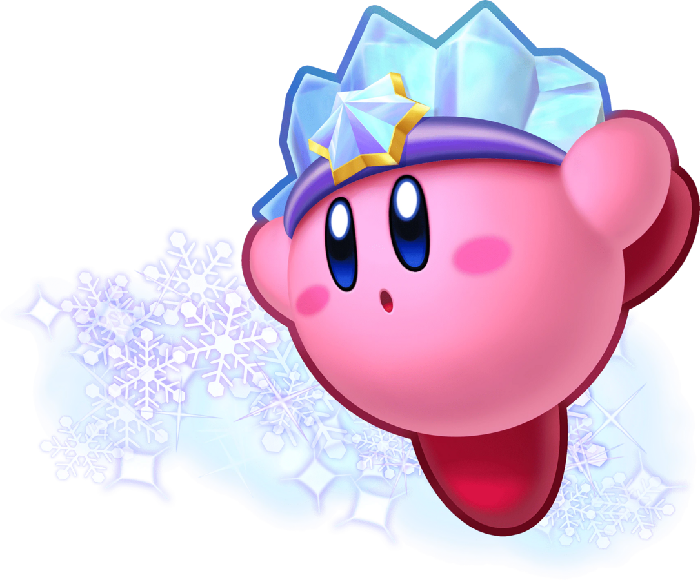
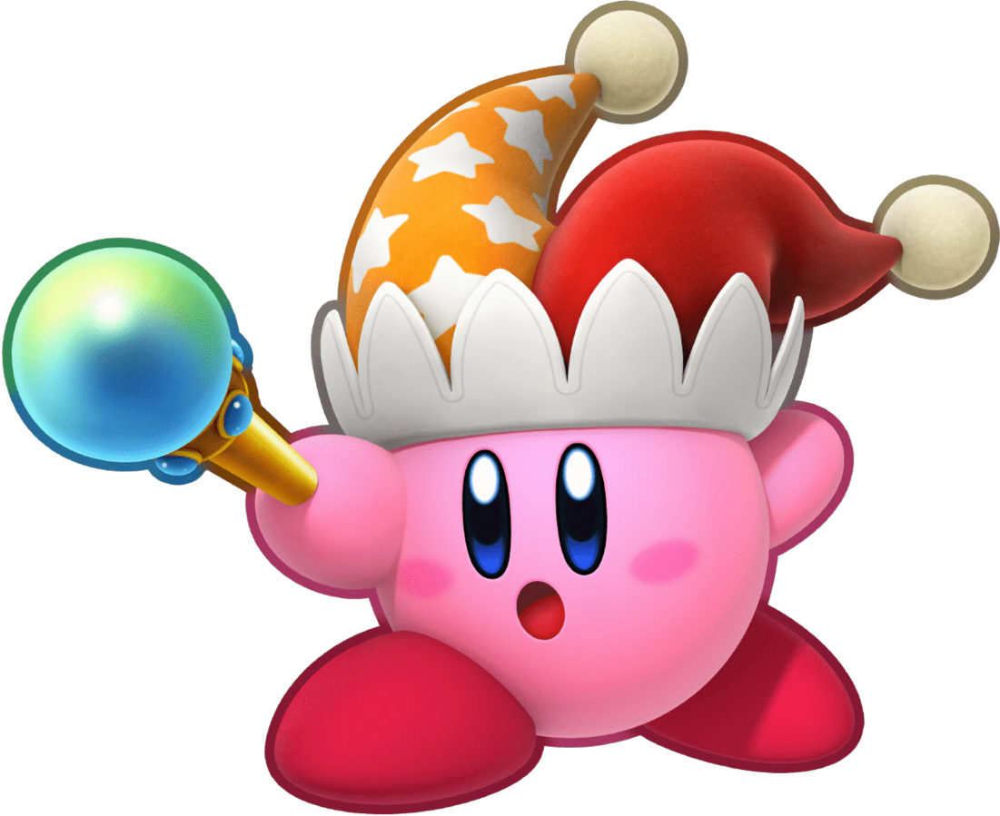

What is Kirby?

The Kirby video game series is made by the Tokyo-based game development company HAL Laboratory, and is published by gaming giant Nintendo. You play as the titular character, Kirby—a spherical, pink friend! He lives in the kingdom of Dream Land on Planet Popstar. Dream Land is a peaceful place, but the series centres around Kirby’s adventures as he fights to save his home from threats both local and extraterrestrial. Most of the games fall under the category of action-platformers, and they’re designed to be accessible to a casual audience to pick up and play, but still have lots of extra challenges for experienced gamers. This was the core principle that led to the development of the game. Kirby was created by Masahiro Sakurai when he was 19 years old and working at HAL Laboratory. According to an article in Kotaku, “the young designer was tasked with creating a game that anyone could pick up and enjoy. Flight was an obvious choice for an ability because it would let the player navigate obstacles with relative ease, unlike Super Mario Bros. where physics thwarted players’ progress at every turn. Sakurai later added the ability to absorb enemy powers to Kirby’s arsenal as a way of encouraging players to interact with the intricacies of each level instead of simply flying past them”. These are the features that set Kirby apart from other platforming protagonists.
Copy Abilities
Kirby can inhale enemies and various objects into his mouth, which he can then spit out as a projectile or swallow to gain a Copy Ability. These are powers of the enemy that he swallows, which he can then use for himself in combat or to solve puzzles. Here are some of the more common Copy Abilities, as described by WiKirby:
- Fire - "Kirby gains the ability to breathe fire and perform other fiery attacks". 
- Sword - “Kirby gains a sword to battle his opponents with”. 
- Bomb - “Kirby gains the ability to toss bombs at his opponents”. 
- Stone - “Kirby transforms into a stone and falls to the ground, becoming impervious to most forms of damage”. 
- Ice - “Kirby can breathe a cone of ice to freeze his enemies and perform other icy attacks”. 
- Beam - “Kirby gains the power to shoot energy attacks in a whip or as orbs”. 
There are many more! My personal favourite is Artist, where Kirby gains a magical paintbrush which can be used to splatter enemies in paint and create living paintings that fight by your side.
Origins of the Character
According to Eurogamer, Kirby’s iconic design came about as almost an accident. Sakurai developed most of the game without knowing the final design of the player character, using a simple spherical placeholder. "I needed a dummy character to represent what the real character would be doing in the game,” the article quotes him saying, “I just put a Kirby-shaped blob in my presentation as a place-holder, but everyone liked it so much we decided to keep it in the game without any major changes”. The simple nature of his design adds to the theme of accessibility that persevered throughout the series’ conception: anyone can draw Kirby! The character’s name was originally Popopo, but was eventually changed to Kirby to appeal more to Western audiences. The origin of the new title is a funny one: according to Kotaku, John Kirby was the name of the lawyer who represented Nintendo when they were being sued by Universal Studios, who alleged that the Nintendo character Donkey Kong was an infringement on the copyright of Universal’s King Kong. Nintendo eventually won the case, and the character was later named in his honour.
Kirby’s famous pink colour was part of his intended design from the very beginning, but due to the first game being on the Game Boy’s monochromatic display, there was some internal confusion about what colour he was supposed to be. The American cover of Kirby’s Dream Land had him coloured white, as he appeared in the game. According to a 1993 interview, the game’s producer Shigeru Miyamoto had assumed that Kirby would be yellow like Pac-Man and other characters with a similar circular design.
Legacy
Nowadays, the Kirby series has grown to include dozens of games across a wide variety of genres, including racing, fighting, puzzle and pinball games. The character has made appearances in many more titles, including notably the Super Smash Bros. series, also created by Sakurai. The Kirby games have sold over 40 million units worldwide, and is one of Nintendo’s most beloved and best-selling franchises. Thanks to its easygoing and accessible nature, Kirby was many children’s first experience with playing video games, cementing the series as a key part of many people’s childhoods. The first video game I ever played was Kirby’s Epic Yarn for the Wii, and I’ve loved the franchise ever since.

Other Media
According to an article by Crunchyroll, Kirby stars in several manga series that have been drawn by over 20 manga artists with over 10 million copies printed. The longest running manga is called Kirby of the Stars: The Story of Dedede Who Lives in Pupupu, which was written and illustrated by Hirokazu Hikawa. The Kirby games were also made into an animated show called Kirby: Right Back at Ya! that ran from 2001 to 2003. Beyond traditional media, the first Kirby Café opened in Japan in 2016, which has since grown into a chain of restaurants that serve adorable food based on the Kirby games and characters.
Some of my favourite pieces of external Kirby media (other than my many plushies) are the recordings from the Kirby 25th Anniversary Orchestra concerts. They were a series of concerts performed by the Tokyo Philharmonic Orchestra and the Osaka Symphony Orchestra in 2017 to celebrate the 25th anniversary of the series. A recording of one of the live performances was released on a set of CDs, and they can now be listened to digitally over streaming services as well.
Note: this video may not display properly depending on the permissions of your browser. If so, you can watch the clip of the orchestra here.